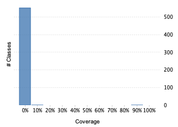
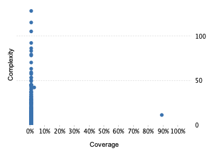

Project overview
Code coverage 574 classes, 46 / 25,319 elements
0.00181681740.2%
Test results 4 / 4 tests 0.3 secs
1.0100%
Code metrics
5,308
17,650
2,361
574
553
18
55,838
38,354
6,310
0.36
7.48
4.11
31.89
2.67
Class Coverage Distribution

Class Complexity

Coverage tree map
Generating Coverage Tree Map. Please wait...

Top 20 project risks
Gps103ProtocolDecoder
GalileoProtocolDecoder
StarLinkProtocolDecoder
NoranProtocolDecoder
BasePipelineFactory
AplicomProtocolDecoder
SkypatrolProtocolDecoder
DmtProtocolDecoder
TytanProtocolDecoder
BlackKiteProtocolDecoder
BceProtocolDecoder
MiniFinderProtocolEncoder
WatchFrameDecoder
OrionFrameDecoder
CellocatorFrameDecoder
SuntechProtocolEncoder
IgnitionEventHandler
TotemProtocolDecoder
MeitrackProtocolDecoder
RuptelaProtocolDecoder
Most complex packages
| 1. | 1.7681382E-40% |
org.traccar.protocol 3732 |
| 2. | 0.00% |
org.traccar.database 624 |
| 3. | 0.00375234520.4% |
org.traccar 470 |
| 4. | 0.00% |
org.traccar.model 340 |
| 5. | 0.03991374% |
org.traccar.helper 289 |
Most complex classes
| 1. | 0.00% |
AplicomProtocolDecoder 130 |
| 2. | 0.00% |
PermissionsManager 117 |
| 3. | 0.00% |
QueryBuilder 107 |
| 4. | 0.00% |
Gt06ProtocolDecoder 94 |
| 5. | 0.0066666670.7% |
Gl200TextProtocolDecoder 88 |